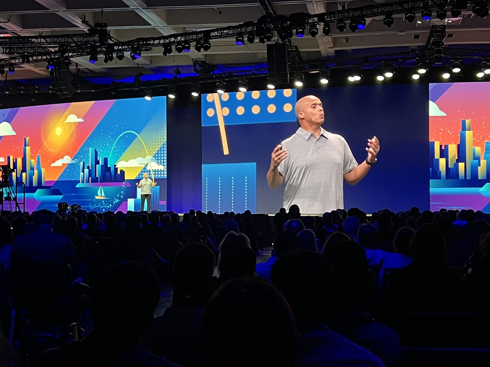

Videos
Several conferences have asked for example presentations, from their potential speakers, like me.
Here are some of the videos that I have included when submitting:
- Introducing Spring Boot 3 - SpringOne Tour Tel Aviv 2022
- General Session - VMware Explore 2022 EU
- General Session - VMware Explore 2022 US
- General Session - VMware Explore 2022 US
- Introducing Javagrunt and my new role at Redis in 2021
- Leap Ahead with Redis 6.2 - SpringOne 2021
- Spring Boot Observability - SpringOne 2020
- Cloud Native Spring for Relational Databases - Distributed SQL Summit 2020
I am also co-hosting, with Dan Vega, a regular live stream called Spring Office Hours.
What do I do
It’s super hard explaining what I do these days. I am a “Spring Developer Advocate” for Broadcom.
My job is to unblock developers, and help them get their hard work into production, with more joy and less pain.
These videos are very similar to the types of conversations that I have regularly, with customers, partners, and Spring developers.
I love my job.